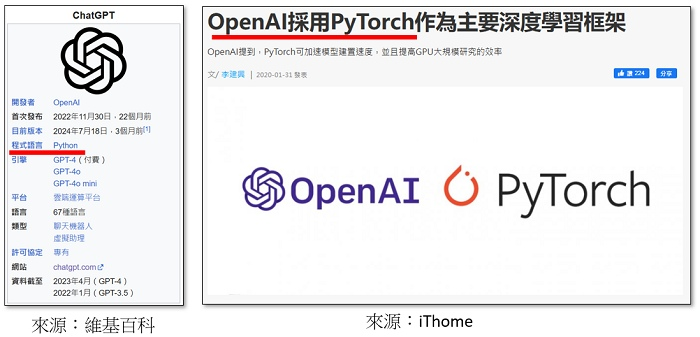
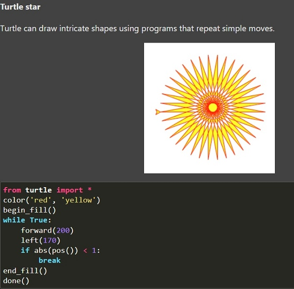
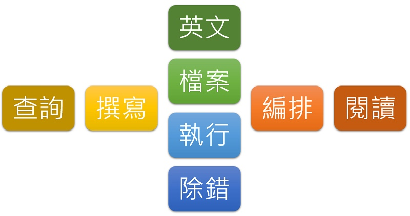
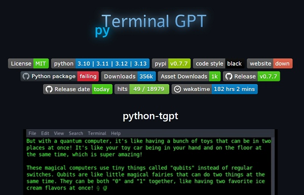
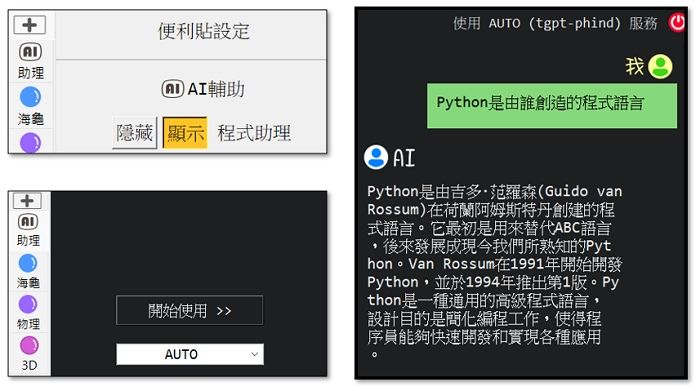
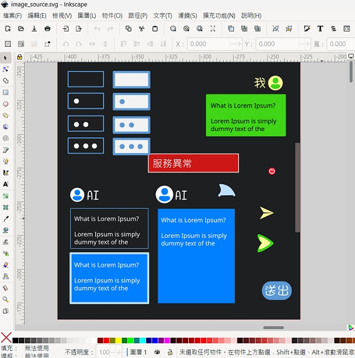
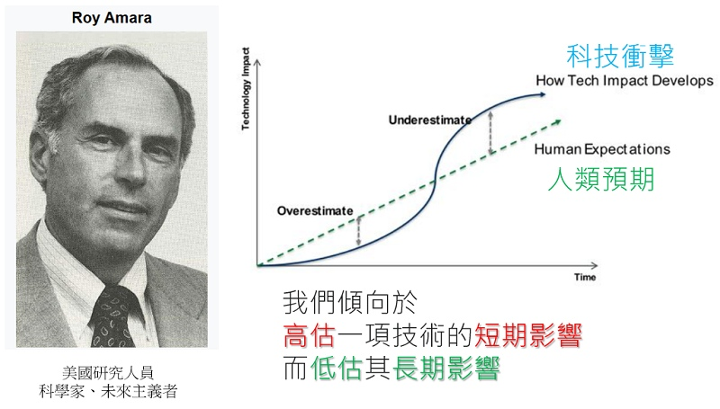
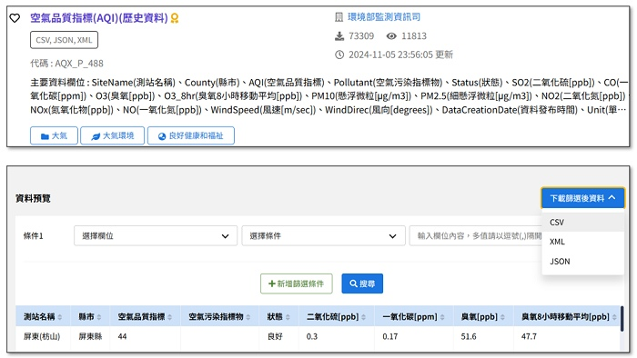
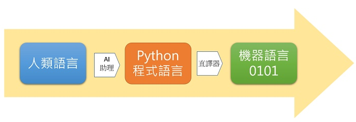
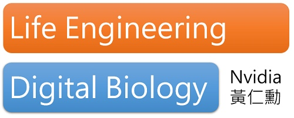

📚AI當助教・一起來教青少年學Python
📕 引言
- 近年來，生成式AI發展快速，網站上也多了許多文字、程式、圖片、音樂及影片等AI生成服務，非常神奇有趣。
- 不過，也經常可以看到如下方的報導或影片。
- (資料來源:1)
-
(59秒, 資料來源:2)
-
AI雖然為人們帶來了新的便利服務，但未來人們的工作真的會被AI取代嗎？程式設計師會被AI取代嗎？以下經由體驗ChatGPT與AI助理的程式設計輔助，對於AI取代人類的問題，相信在你心中就會有自己的看法。
📗 Coding工作
- ChatGPT是OpenAI所開發的大型語言模型，能夠以對話的方式理解並回應使用者的輸入內容，從2022年底發佈以來，受到全球的矚目。ChatGPT是資訊科學家研究深度學習的里程碑，你知道它是用什麼程式語言開發出來的嗎？
- 
-
Coding(程式設計)是什麼？撰寫python程式需要人們需要做哪些事？讓我們來寫個簡單的海龜程式吧(Py4t簡化便利貼)
範例程式 海龜畫多邊形 - - - - - - - (海龜畫多邊形 1/2 新檔)
from 海龜模組 import *
速度('fastest')
for 數 in range(500) :
向前(數*2)
右轉(360/5 - 1)
完成()
-
想一想，在程式設計的過程中，人們通常要做以下的事情。
-
海龜的原文是turltle，是一個初學者學習python可以使用模組，相關的功能可以到官網查詢。 turtle官網
-

-
接下來，利用官網上的說明，將程式改寫為英文程式。
範例程式 turtle英文程式 - - - - - - - (海龜畫多邊形 2/2 接續)
from turtle import *
speed('fastest')
for i in range(500) :
forward(i*2)
right(360/5 - 1)
done()
-
除了基本的編輯，在程式設計的過程中，人們還要做什麼事？
-

-
這些程式的工作，真的會被AI取代嗎？
📘 不用學程式？
- Nvidia(輝達) 是美國一家以設計和銷售圖形處理器(GPU) 的科技公司，在2024年6月，它取代微軟成為全球市值最高的公司。這家公司與AI有什麼關係呢？
- (1分52秒, 資料來源:3)
-
黃仁勳(Jensen Huang) 是臺灣裔美國人，出生於臺灣的台南，9歲時移居美國，是NVIDIA(輝達) 的共同創辦人暨執行長，他參加杜拜 (UNA/WAM) 2024 年世界政府高峰會，以下是在會議中的訪談片段：
-
(50秒, 播放速度請調為0.75, 資料來源:4)
-
接下來，讓我們使用 ChatGPT 來學習Python程式
-
試著向ChatGPT提出以下的問題，來認識Python程式語言。也可以從回答中，再追問感興趣的部分。
Python是由誰創造的程式語言？
Python名稱的由來？
Python的常見應用有哪些？
-
試著向ChatGPT提出以下的問題，來認識Python基本輸入輸出input與print，並將範例在編輯器中執行。
Python中的input要如何使用，請給出範例程式。
Python中的print要如何使用，請給出範例程式。
將Python中的input與print結合，給一個輸入姓名並印出的範例程式。
-
在Windows10或11中，如果電腦有麥克風設備，可以使用語音輸入功能，來產生提問的文字。
開啟語音輸入 --- 在硬體鍵盤上按Windows 標誌鍵+ H，按觸控式鍵盤上空格鍵旁邊的麥克風鍵
若要開始聽寫，請選取文字欄位，然後按 Windows 標誌鍵 + H 以開啟聽寫工具列
-
試著向ChatGPT提出以下的問題，求平均數(引用自翰林9上資訊科技2-2)。
請設計一個程式，讓使用者輸入兩個數字後，再呈現兩個數字的平均值。
-
在執行求平均數程式後，可以問問看下列問題，來理解程式。
python的設值是什麼？
python的資料型態有哪些？
python的數值運算符號有哪些？
📙 整合AI助理
- 撰寫程式碼通常是在編輯器中進行，有辦法將類似ChatGPT整合進來嗎？
- 下方是Github Copilot的使用，一起來看一看。
- (1分28秒, 資料來源:5)
-
Github Copilot是專業的程式助理服務，整合起來利用AI輔助寫程式變得更便利。但即使申請試用一個月的帳號，也需登錄信用卡，介面上也較多英文，教育免費帳號主要是針對高中以上學校，對中小學生來說，有推廣上的困難。
-
有沒有其他類似，但簡單的服務呢？
-
這邊有找一個在終端機使用LLM(大型語言模型)的python函式庫， python-tgpt ，可使用多種LLM服務。
-

-
請在py4t的工具選單 -> 開啟系統終端機 中，輸入以下指令來體驗看看
python -m pytgpt.console -
利用這個函式庫，再加上python的threading與tkinter函式庫，將簡易的AI助理整合至py4t中，讓中小學生也可以體驗AI助理的功能。( 原始碼網站 )
-

-

-
試著向Py4t的AI助理提出以下的問題，來認識AI助理是如何整合到py4t。也可以從回答中，再追問感興趣的部分。
什麼是tkinter函式庫？請給一個簡易的範例。
什麼是threading函式庫？請給一個簡易的範例。
📕 AI助理應用
-
試著向AI助理提出以下的問題，計算學期成績(引用自翰林9上資訊科技2-2)。
請設計一個程式，讓使用者輸入各項成績後，再將各項成績轉換為學期成績，並判斷學期成績是否及格？（其中，作業成績占40％，測驗成績占40％，平時成績占20％，學期成績60分為及格分數。）
-
試試看將提問修改，看看AI助理產生的程式是否會不同。也可參考以下提問，了解程式的概念。
python的if如何使用？
python的else如何使用？
python的elif是什麼？
什麼是python的區塊縮排？
python的關係運算符號有哪些？
-
試著向AI助理提出以下的問題，累加計算(引用自翰林9上資訊科技2-2)。
請設計一個程式，讓使用者輸入數字n後，再計算1+2+3+...+n的值
-
試試看將提問修改，看看AI助理產生的程式是否會不同。也可參考以下提問，了解程式的概念。
python的list是什麼？
python的索引如何使用？
python的for迴圈如何使用？
python的range是什麼？
-

-
(資料來源:6)
-
(1分23秒, 資料來源:7)
-
接著讓我們來做一個有關AQI空氣品質指標的公開資料處理練習，請到 環境部環境資料開放平台 ，並下載AQI的csv公開資料。
-

-
試著利用向AI助理提問，驗証執行，並不斷修正，來產生一個可以讀取csv公開資料的python程式。
📗 思考未來程式教育
- 想一想今天的課程，我們是如何寫程式的呢？
-

-
(3分48秒, 資料來源:8)
-

-
youtube頻道 -- USTV 非凡電視、Joen99、朱宥勳使出人生攻擊!、HackBear 泰瑞 ↩
-
看懂 #Nvidia 如何因20年前的一個決定，成為今天AI霸主【懂商業 看商周】Ep.25 #GTC #黃仁勳, by 商業周刊 , youtube連結 ↩
-
【GitHub Copilot】GitHub Copilot完整範例與步驟解說教你開始使用 | 用AI配對程式設計師幫你寫程式 | 恆逸課程介紹 |, by 恆逸教育訓練中心 , youtube連結 ↩
-
維基百科、https://anthonyiannarinopt.com/2020/12/10/amaras-law-and-behavior-change/ ↩
-
黄仁勋：“别再学编程，如果一切重来，我会学习。。。” 聊聊 AI 阴影下的程序员生存技能 | 回到Axton, by 回到Axton , youtube連結 ↩